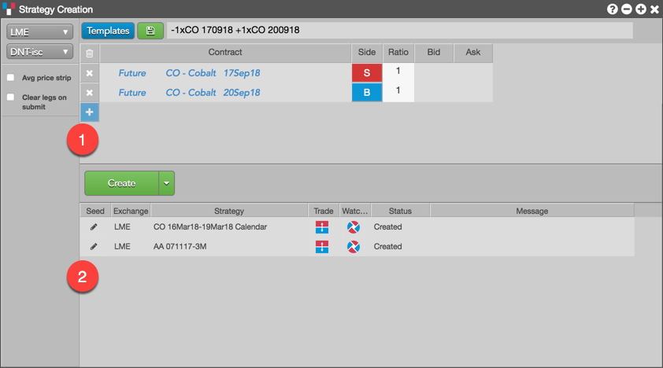

LME allows users to create spreads, referred to by LME as "carries," which consist of any two contracts of the same product, with the following stipulations:
Once the LME Exchange receives an order for a carry, it will broadcast it to all applications connected to the LME Exchange at that time. For carry orders, the order price is the net difference between the indicative settle prices of the buy leg and sell leg.
The following is an example of an LME custom carry options strategy.
